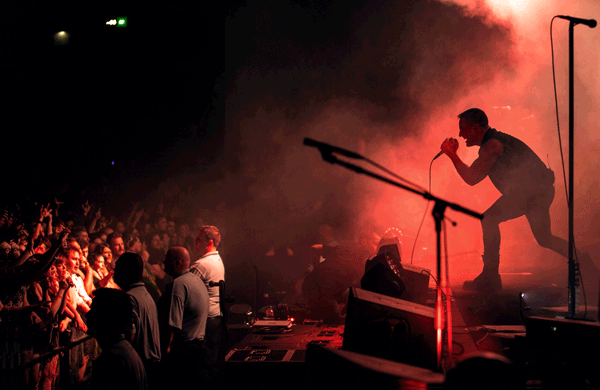

<!--
  Generated template for the VideoListPage page.

  See http://ionicframework.com/docs/components/#navigation for more info on
  Ionic pages and navigation.
-->
<ion-header>

  <ion-navbar>
    <ion-title>
      {{title}} (<span *ngIf="videoPageRequest">{{loadCount}}</span>/<span *ngIf="videoPageResult">{{videoPageResult.totalCount}}</span>)
    </ion-title>

    <ion-buttons end>
      <button ion-button icon-only (click)="toggleSearchBox()">
        <ion-icon name="search"></ion-icon>
      </button>
    </ion-buttons>
  </ion-navbar>
  <ion-searchbar placeholder="请输入关键字" *ngIf="showSearchBox" [showCancelButton]="false" [(ngModel)]="searchInput"
    [showCancelButton]="true" (ionInput)="onInput($event)" (ionCancel)="onCancel($event)">
  </ion-searchbar>
</ion-header>

<ion-content>
  <div *ngIf="videoPageResult==null || videoPageResult.totalCount <= 0">
    <span>没找到视频哦!</span>
  </div>
  <div *ngIf="videoPageResult!=null && videoPageResult.totalCount > 0">

    <ion-card *ngFor="let video of videoPageResult.items" (click)="showVideoInfo(video)">
      
      <ion-card-content>
        <ion-card-title>
          {{video.fileName}}
          <div class="sub-title">{{video.appendDate}}</div>
        </ion-card-title>
        <div *ngIf="video.favorite">
          <ion-badge *ngFor="let fav of video.favorite" color="secondary">{{fav.categoryName}}</ion-badge>
        </div>
      </ion-card-content>
    </ion-card>
    <ion-infinite-scroll (ionInfinite)="$event.waitFor(doInfinite())">
      <ion-infinite-scroll-content></ion-infinite-scroll-content>
    </ion-infinite-scroll>
  </div>

  <ion-fab right bottom>
    <button color="primary" ion-fab>
      <ion-icon name="arrow-dropup"></ion-icon>
    </button>
    <ion-fab-list side="top">
      <button ion-fab (click)="goToTop()">
        <ion-icon name="arrow-round-up"></ion-icon>
      </button>
      <button ion-fab (click)="getLuckVideo()">
        <ion-icon name="bulb"></ion-icon>
      </button>
    </ion-fab-list>
  </ion-fab>
</ion-content>